Engineering Projects
Formula SAE vehicle dynamics, CAD modeling, finite element analysis, and manufacturing case studies.
FSAE Wheel Center Design
Formula SAE Steering & Suspension
Year 1 Design (2024-2025 Car) · Year 2 Design (2025-2026 Car)
SOLIDWORKS
Project Summary
Designed the Year 2 wheel center for the Flames Racing Formula SAE IC car, focusing on aggressive weight reduction and in-house manufacturing feasibility.
Key Achievements & Engineering Methods
- 50% Weight Reduction: Achieved a 50% weight reduction from the previous year (Year 1 Design), minimizing unsprung mass and enhancing tire-to-road contact.
- Data-Driven FEA Simulations: Refined FEA simulations by using on-car data acquisition to derive maximum lateral and longitudinal G-loading from competition runs rather than using estimated static loads.
- In-House Machinability: Improved machinability of complex components using SOLIDWORKS to allow for in-house manufacturing.
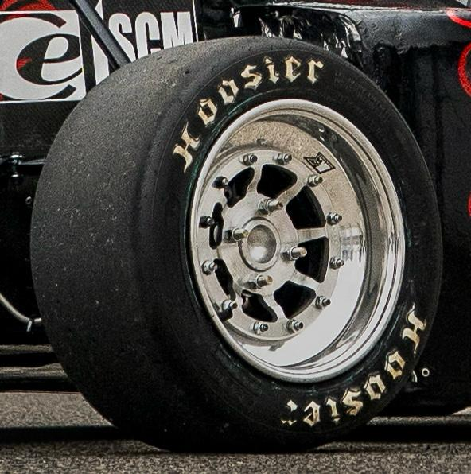
Year 1 Wheel Center on Car
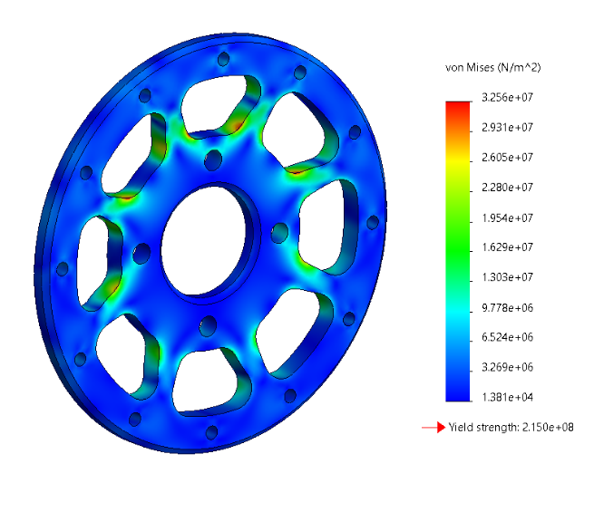
Year 1 Wheel Center FEA Simulation
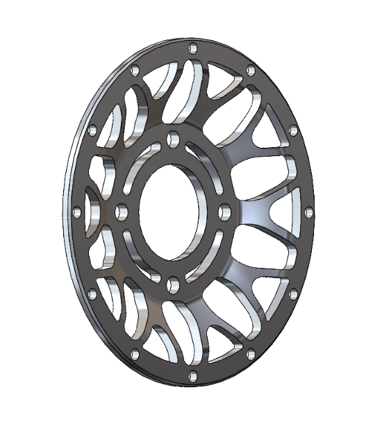
Year 2 Wheel Center Isometric View
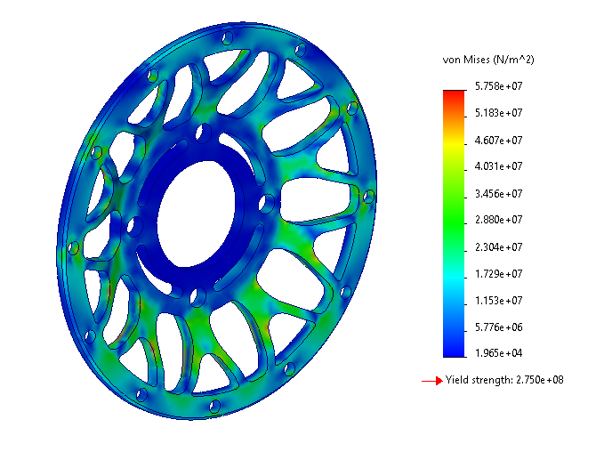
Year 2 Wheel Center FEA Simulation
FSAE Wheel Hub Design
Formula SAE Suspension · CAD Modeling · Structural Analysis
Project Summary
Designed custom front and rear wheel hubs to support multi-axis dynamic loads while reducing rotational unsprung mass.
Key Achievements
- 30–40% Weight Reduction: Achieved a 30–40% weight reduction between front and rear hubs compared to previous baseline components.
- Iterated Design Balance: Iterated design in SOLIDWORKS and FEA to balance weight and simulated strength under dynamic loading.
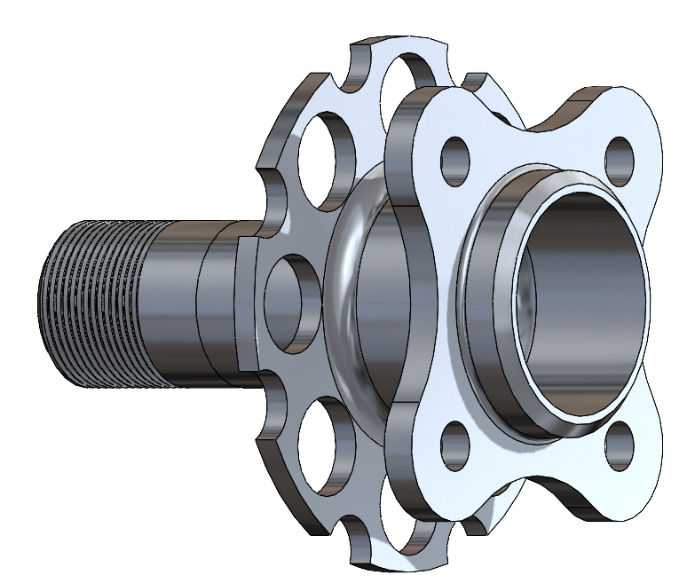
Front Wheel Hub CAD Model
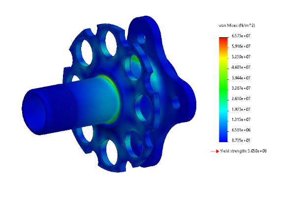
Front Wheel Hub FEA Simulation
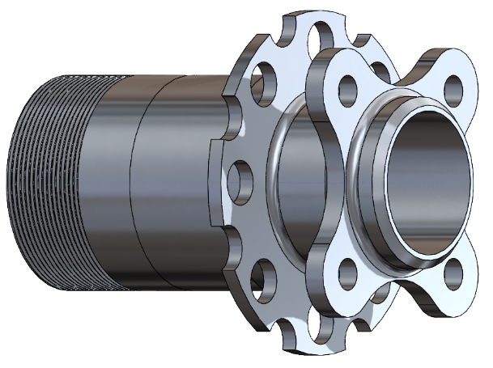
Rear Wheel Hub CAD Model
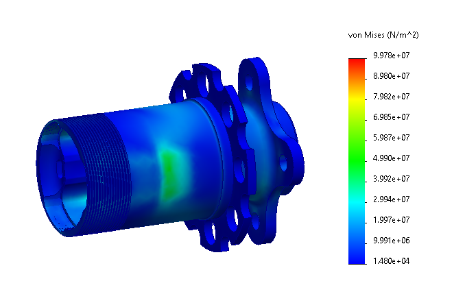
Rear Wheel Hub FEA Simulation
FSAE Wheel Hub Final Product: Failure Analysis
Manufacturing QC · Stress Concentration · Root Cause Analysis
Case Study Overview
Investigation of an experimental wheel hub that sheared during dynamic use compared to the final correctly manufactured component.
Findings & Root Cause
- Correctly Machined Hub (Left): Final component manufactured to exact specifications.
- Incorrectly Machined Hub (Right): Hub sheared during use. Cause: A chamfer was incorrectly machined in the place of a fillet, creating a stress concentration which caused the part to fail.
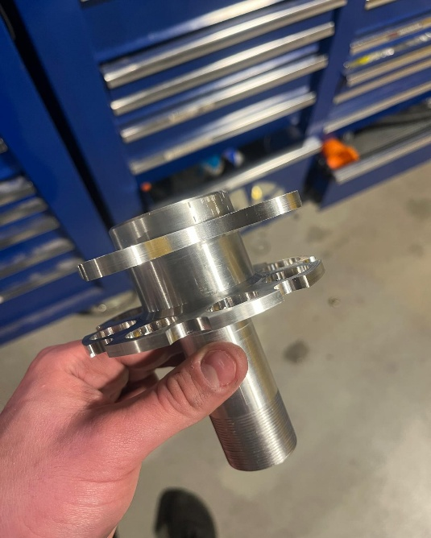
Correctly Machined Hub (Fillet)
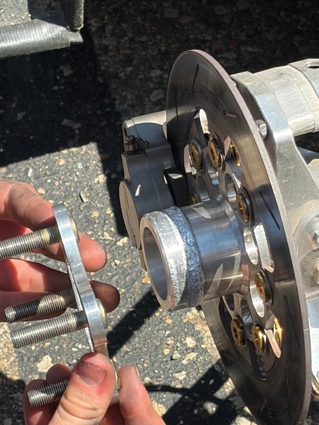
Incorrectly Machined Hub (Chamfer)
Statics Popsicle Stick Bridge
School Project · Ansys Simulation · Structural Statics
Project Summary
Designed, simulated, and load-tested an optimized truss bridge under central point loading.
Result
- Predictive Accuracy: Predicted bridge load capacity within ~5% based on static structural Ansys simulation compared to actual physical destructive testing.
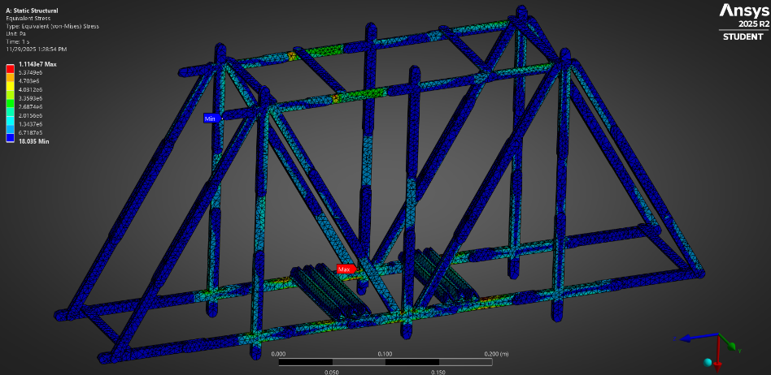
Ansys Static Structural Simulation
Mechanical Engineering Internship – Valmet Inc.
Summer 2025 · SOLIDWORKS CAD · Tooling Design · Excel Sizing Tools
Key Responsibilities & Deliverables
- Created SolidWorks models and drawings for tube shield bend die designs.
- Introduced an Excel-based sizing tool to output bend die dimensions for irregular tube shield sizes accounting for material spring-back.
- Improved Excel tools for key products, enabling item number lookup within pricing spreadsheets.
- CAD models and fabrication drawings for tube shield die manufacturing.
- Spring-back compensation calculations integrated into sizing tools.
- Automation of product pricing lookup formulas.
Missionary Work in Ghana, West Africa
2015 – 2024 · The Rafiki Foundation · Community Outreach & STEM Tutoring
Overview & Service
- Tutored African middle schoolers in math and science.
- Helped lead events and activities for African kids in his community.
- Developed adaptability, communication, and leadership skills across nine years of service.
- Math and science tutoring for middle school students.
- Community leadership and youth program coordination.
- Cross-cultural communication and collaborative problem-solving.